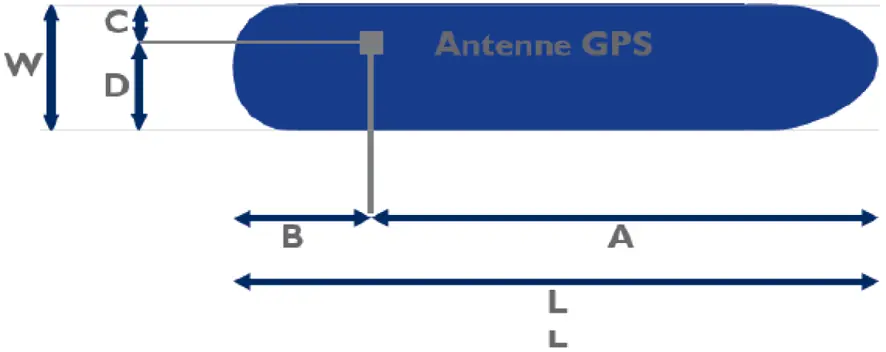
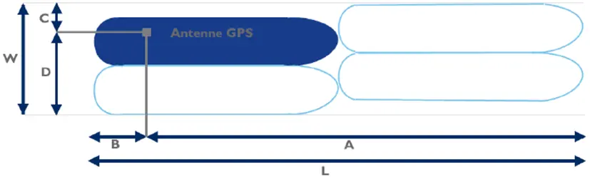

2 Referentiepunt voor de positie-informatie op het schip.
De schipper moet de aan de antenne gerelateerde waarden A, B, C, en D met de nauwkeurigheid van 1 m invoeren.
Waarde A wordt in de richting van de boeg gemeten.


De schipper moet de aan de antenne gerelateerde waarden A, B, C, en D met de nauwkeurigheid van 1 m invoeren.
Waarde A wordt in de richting van de boeg gemeten.


Dutch legislation carries no copyright (Auteurswet article 11). Reproduced as published on wetten.overheid.nl.